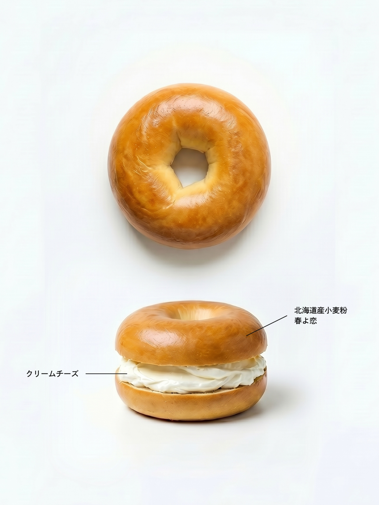

プレーン / PLAIN
ニューヨーク
Plain Bagel
24時間低温発酵させた生地を、蜂蜜を溶かした湯でケトリング（茹で）してから焼き上げる本格製法。 外皮はパリッと、内部は驚くほどもっちり。シンプルだからこそ、素材の良さが最大限に際立ちます。 看板商品にして、日々変わらない完成形。
¥
320

毎朝7時、清澄白河の小さな窯から生まれるベーグル。
ニューヨーク仕込みのレシピと国産小麦の香りが出会う、ここだけの一枚。
OUR STORY
「良い素材、正直なプロセス、余計なものは何も入れない」
BAGEL & CO. はこのシンプルな哲学から生まれました。
ニューヨークで修行を積んだオーナー職人・佐藤 花が、帰国後に理想のベーグルを追い求めて2019年に創業。
毎朝仕込みの段階から最後の包装まで、手を抜く工程はひとつもありません。
24H
低温長時間発酵
0
添加物・保存料
100%
国産小麦使用
7AM
毎日焼きたてOPEN
北海道産強力粉「春よ恋」を中心に、季節によってブレンドを変えながら 最適な風味と食感を追求しています。輸入小麦には頼りません。
焼く前に蜂蜜を溶かした湯で茹でる伝統製法。 独特のもちもち感とツヤのある外皮はこの工程からしか生まれません。
小麦粉・水・塩・麦芽・酵母。 ベーグルに必要な素材だけを使い、余計なものは一切加えません。
近隣の人気ロースタリー「清澄珈琲焙煎所」との協業により、 ベーグルに合わせた専用ブレンドコーヒーをご提供しています。
ACCESS
※ ベーグル完売次第、閉店することがございます